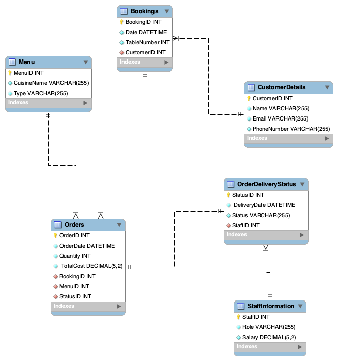
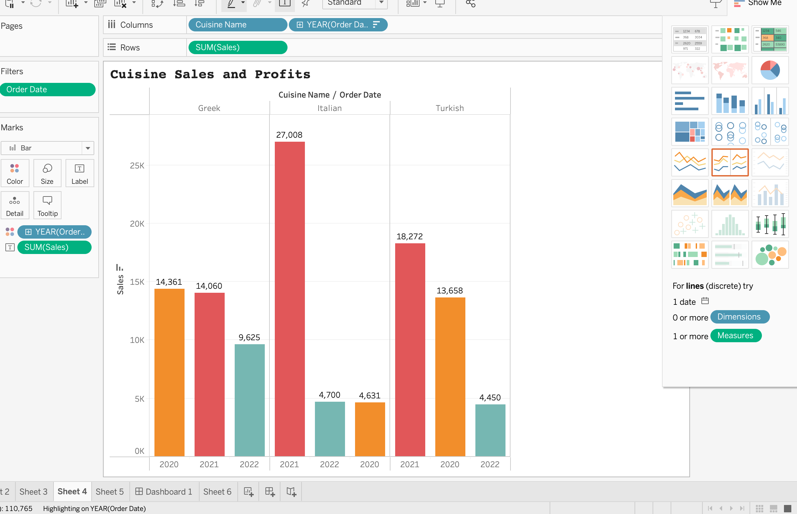
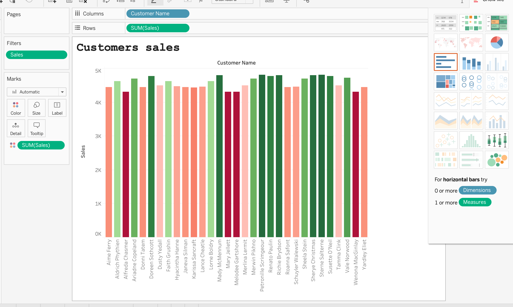
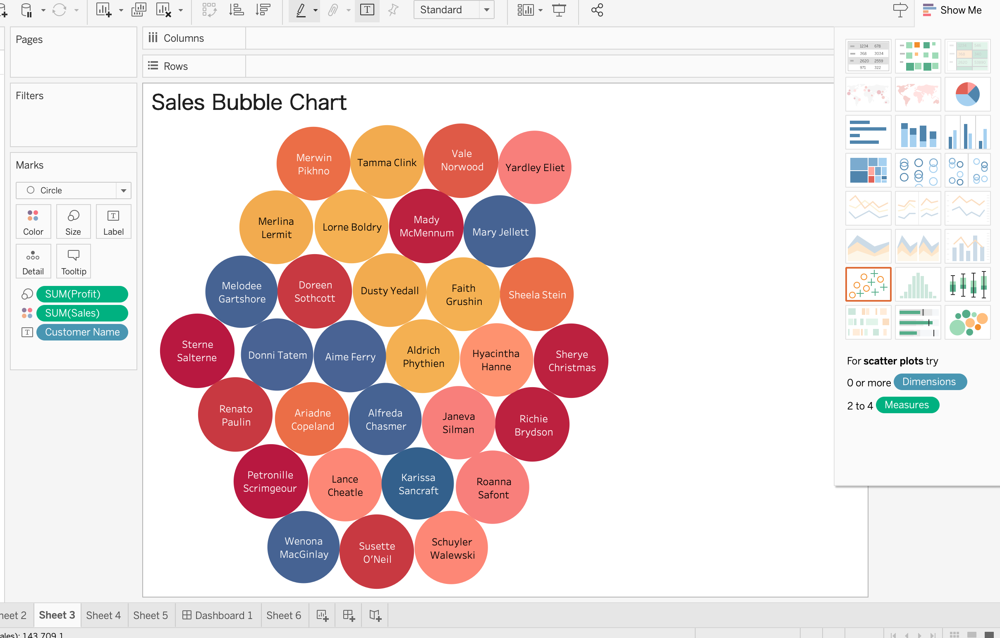
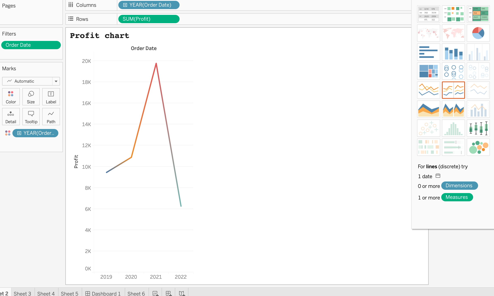
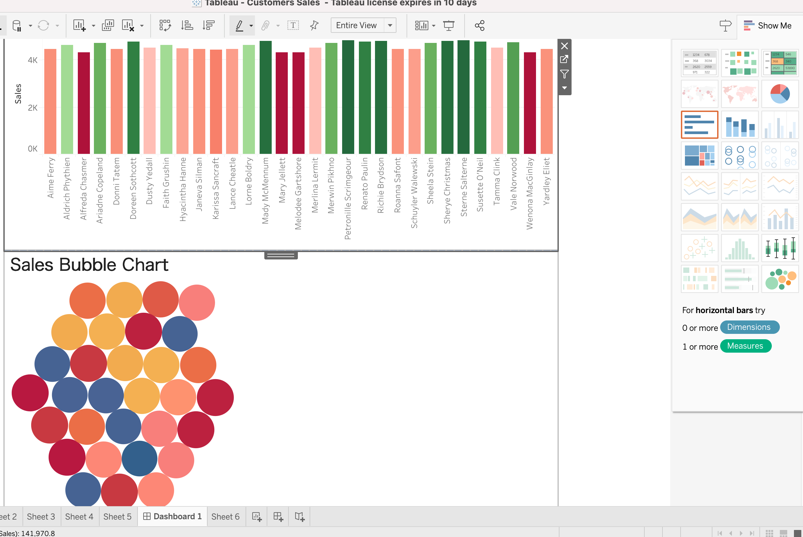

Capstone Project
Wed May 1, 2023
30 min read
In this post, I am pleased to present the culmination of my efforts during the Meta Certificate program, an overview of my capstone project.
Here is the roadmap we will follow:
- Version Conttrol
- Database setup in MySQL Workbench
- Set up the MySQL instance server in MySQL Workbench
- Creating an Entity Relationship Model in MySQL Workbench
- Create an ER diagram data model and implement it in MySQL
- Use SQL to create virtual tables, stored procedures and prepared statements for Little Lemon restaurant
- stablisheding a database API that allows Python code to interact with a database
- Add query functions
- Using Tableau to help Little Lemon generate insights using the tools data analysis features
Version control is an indispensable component of software development and collaborative projects. It encompasses the management of modifications made to a project's source code and related files throughout its lifespan. In this project, I fulfilled the following tasks:
- Establishment of a repository or local directory, serving as a centralized location for code storage.
- Thorough documentation and tracking of all system modifications implemented.
- Provision of collaborative access, granting others the ability to review, contribute to, and enhance the codebase.
Little Lemon, a growing business, recognized the need for a reliable relational database system to efficiently store and manage large amounts of data. As part of this project, I successfully implemented the use of MySQL Workbench to create a robust database system for Little Lemon.
As part of the database system development for Little Lemon, I created an Entity Relationship (ER) diagram to represent the structure and relationships within their database. The ER diagram serves as a visual representation of entities, attributes, and the connections between them. During the database design phase, I explored various data models, including the Entity Relationship Model, Hierarchical Data Model, Object-Oriented Data Model, and Dimensional Data Model. Each model offers unique advantages and considerations, tailored to specific objectives. The following illustration provides an ER diagram of the physical data model for Little Lemon, which has been deployed in MySQL. 
After creating the physical model, I proceeded to perform the following steps: synchronizing it with the MySQL server using the forward-engineer method. To accomplish this, I launched the Forward Engineer. The wizard generated the internal SQL schema, which was executed in MySQL Workbench.
Little Lemon asked to create a virtual table called OrdersView that focuses on OrderID, Quantity and Cost with orders quantity of more than 2.
Query
CREATE VIEW OrdersView AS
SELECT OrderID, Quantity, Cost
FROM orders
WHERE Quantity > 2;
LLittle Lemon asked to create a procedure called GetMaxQuantity() that displays the maximum ordered quantity in the orders table.
Query
SELECT customers.CustomerID, customers.FullName, orders.OrderID, orders.Cost, menus.MenuName, menuitems.CourseName
FROM customers INNER JOIN orders
ON customers.CustomerID = orders.customerID
INNER JOIN menus ON orders.MenuID = menus.MenuID
INNER JOIN menuitems ON menuitems.MenuItemID = menus.MenuItemsID WHERE Cost > 150 ORDER BY Cost;Little Lemon asked you to create a procedure called GetMaxQuantity() that displays the maximum ordered quantity in the orders table.
Query
CREATE PROCEDURE 'GetMaxQuantity'()
SELECT max(quantity) AS "Max Quantity in Order" FROM orders
Little Lemon asked to create few procedures to complete the following tasks:
MakeBooking() query
CREATE PROCEDURE 'MakeBooking'(booking_id INT, customer_id INT, table_no int, booking_date date)
BEGIN
INSERT INTO bookings (BookingID, BookingDate, TableNumber, CustomerID) VALUES
(booking_id, booking_date, table_no, customer_id);
SELECT "New booking added" AS "Confirmation";
END
CheckBooking() query
CREATE PROCEDURE 'CheckBooking'(booking_date DATE, table_number INT)
BEGIN
DECLARE bookedTable INT DEFAULT 0;
SELECT COUNT(bookedTable)
INTO bookedTable
FROM Bookings WHERE BookingDate = booking_date and TableNumber = table_number;
IF bookedTable > 0 THEN
SELECT CONCAT( "Table", table_number, "is already booked") AS "Booking status";
ELSE
SELECT CONCAT( "Table", table_number, "is not booked") AS "Booking status";
END IF;
END
CancelBooking() query
CREATE PROCEDURE CancelBooking(IN bookingId INT)
BEGIN
DELETE FROM Bookings WHERE BookingID= bookingId;
END
UpdateBooking() query
CREATE DEFINER='admin1'@'%' PROCEDURE 'UpdateBooking'(booking_id INT, booking_date DATE)
BEGIN
UPDATE bookings SET BookingDate = booking_date WHERE BookingID = booking_id;
SELECT CONCAT("Booking", booking_id, "updated") AS "Confirmation";
END
The next steps were to visualize the sales data of a restaurant and implement a database client in Python. This step aimed to achieve the following learning objectives:
Now, it's time to dive into Data Analytics with Tableau and present their insights using worksheets and interactive dashboards: 




Conclusion After exploring data visualization with Tableau, we have gained valuable insights through visual representations. The use of Tableau's powerful tools has allowed me to uncover meaningful patterns and trends in the data. It has been a journey of discovery and understanding. Thank you for joining me on this exploration and for engaging with the project. If you have any further questions or thoughts, please feel free to share. With the enhanced visual insights gained, we conclude this project. Thank you once again for your participation.